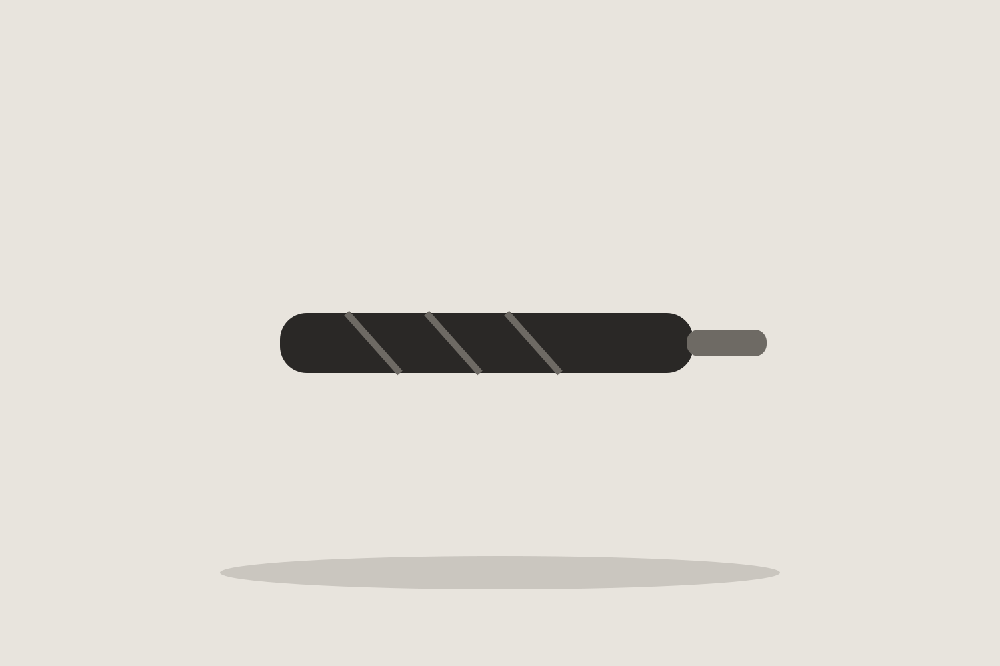
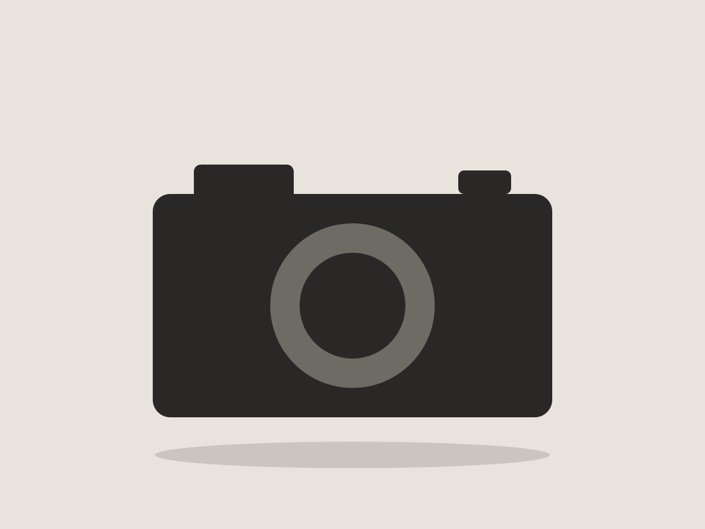
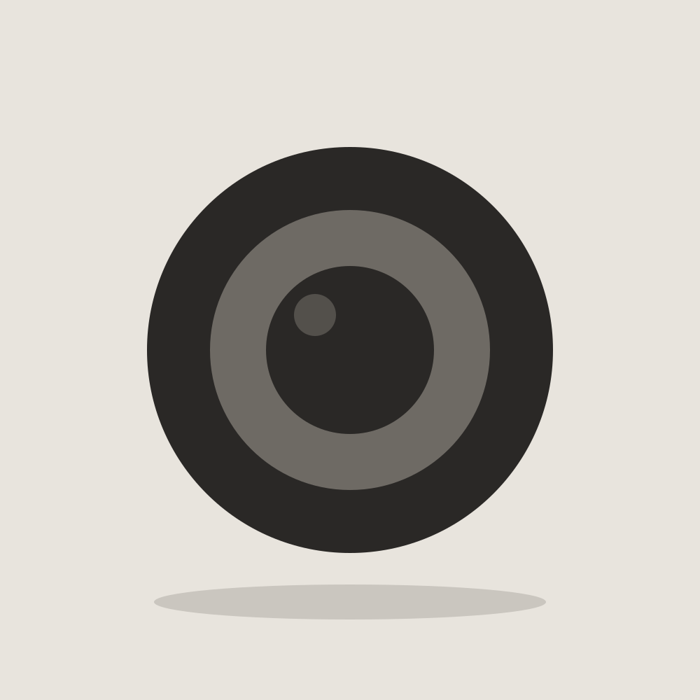

글자 사이 간격 1mm로 문장의 온도를 바꾼다.
책 한 권의 모든 페이지 여백이 같은 비율로 계산되어 있다.

보이지 않는 부분까지 규칙으로 다룬다.
자기 책에 쓸 서체를 3년 동안 직접 그렸다.

포스터 제목도 본문과 같은 크기로 쓰고 굵기만 바꾼다.

크기 대신 무게로 위계를 만든다.


비 예보가 없어도 늘 가방 바깥 주머니에 넣어 둔다.

접었을 때 손바닥만 해서 무게를 느끼지 못한다.
주말 산책 때 한 롤을 다 찍을 때까지 들고 다닌다.


바로 볼 수 없어서 한 장을 고를 때 더 오래 보게 되고, 셔터 소리가 커서 찍었다는 실감도 난다.